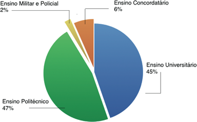
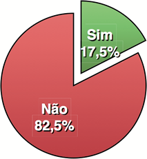
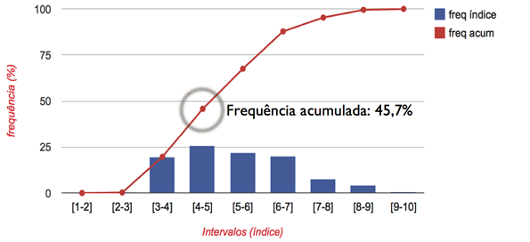
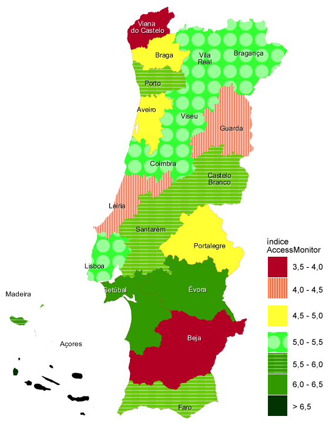
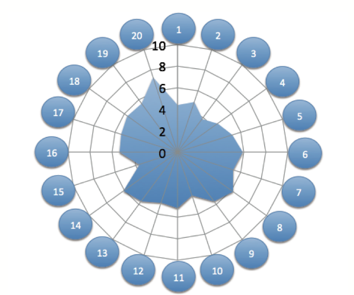
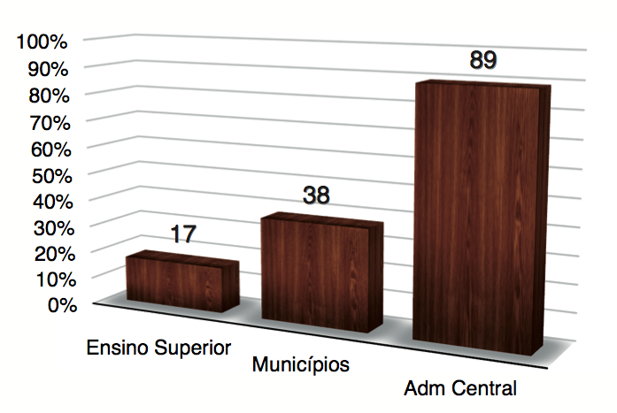

Você está aqui:
Estudo sobre o estado da Acessibilidade dos sítios Web dos estabelecimentos de ensino superior
De que forma os conteúdos Web institucionais dos estabelecimentos de Ensino Superior cumprem os requisitos de acessibilidade constantes das Diretrizes de Acessibilidade para o Conteúdo da Web (WCAG) 2.0 do Consórcio World Wide Web (W3C)?
Índice
- Sumário executivo
- Ferramentas de análise
- Metodologia
- Caraterização da amostra
- Resultados
- Conclusão – discussão dos resultados
Sumário executivo
De que forma os conteúdos Web institucionais dos estabelecimentos de Ensino Superior cumprem os requisitos de acessibilidade constantes das Diretrizes de Acessibilidade para o Conteúdo da Web (WCAG) 2.0 do Consórcio World Wide Web (W3C)?
Esta é a pergunta de partida que conduziu o presente estudo pelo universo dos sítios Web representantes dos estabelecimentos de Ensino Superior, que constam da base de dados da Direção Geral do Ensino Superior. Num total de 338 estabelecimentos pertencentes a 105 instituições, o universo do Ensino Superior é aqui representado por uma amostra de 18331 páginas.
Globalmente, no que diz respeito a práticas de acessibilidade, é possível retirar duas conclusões principais para o Ensino Superior:
- Nenhum dos 336 sítios Web analisados alcança o nível de conformidade ‘A’ das WCAG 2.0;
- 54,3% dos 336 sítios tem nota AccessMonitor superior a 5 (numa escala de classificação de práticas de acessibilidade de 1 a 10, correspondendo 10 a uma boa prática);
Os dois dados parecem contraditórios mas, mais uma vez, a escala numérica do AccessMonitor, parece refletir mais fielmente a situação de acessibilidade aos sítios Web. A realidade da escala de conformidade das WCAG, divididas em 3 níveis — ‘A’, ‘duplo-A’ e ‘triplo-A’ — parece ser demasiado severa para com as práticas de acessibilidade encontradas num sítio. Basta 1 dos 61 critérios de acessibilidade não estar conforme numa página, para que o sítio surja também não conforme. Num exemplo extremo, a escala de conformidade das WCAG, sintetiza o resultado de um sítio Web com 100 páginas que tem 1 erro numa página, da mesma forma que um sítio Web com 100 páginas que tem 100 erros em cada página. O índice AccessMonitor acaba por sintetizar esta observação de forma diferenciada. Neste caso em concreto, o índice mostra-nos que em 54,3% dos sítios foram encontradas práticas interessantes. A presente nota sobre o AccessMonitor é importante para perceber o panorama “verdejante” com que o território nacional é pintado na figura 5 da página 12, em que é possível observar que 65% dos distritos (incluindo aqui as regiões autónomas) obtêm um índice AccessMonitor positivo.
O presente estudo foi elaborado pela equipa da Unidade ACESSO, do departamento da Sociedade da Informação da Fundação para a Ciência e a Tecnologia, IP. A amostra contempla os sítios Web de 338 estabelecimentos de Ensino Superior, lista essa que pode ser consultada no sítio Web da ACESSO em: https://preprod.acessibilidade.gov.pt/publicacoes/ensino-superior-2013.
Nota: Qualquer entidade do Ensino Superior que conste da lista, pode solicitar à equipa da Unidade ACESSO da FCT o acesso ao seu relatório de resultados detalhados.
Ferramentas de análise
O presente estudo foi realizado com recurso ao validador automático AccessMonitor para a versão 2.0 das Web Content Accessibility Guidelines do W3C. Usou-se igualmente para algumas verificações manuais os navegadores Safari (v7.0) e Opera (v12.16), o leitor de ecrã VoiceOver e o ampliador de caracteres Zoom do sistema operativo Mac OS 10.9.
Metodologia
A primeira etapa do presente estudo passou pela construção de um diretório no AccessMonitor com todos os sítios representativos dos estabelecimentos de Ensino Superior:
- recolha dos URLs dos estabelecimentos de Ensino Superior junto da Direcção Geral de Ensino Superior;
- produção da amostra para cada um dos 338 sítios Web compilados na fase anterior (i.e. página principal + páginas ligadas à primeira);
- inserção dos URLs no validador AccessMonitor e construção dos múltiplos diretórios agregadores (ensino superior, ensino superior privado, ensino superior público, ensino superior universitário, ensino superior politécnico, ensino superior concordatário, ensino público militar, distrito, instituição);
A segunda etapa passou:
- pela recolha dos dados estatísticos no AccessMonitor;
- pela produção do presente relatório síntese.
O trabalho decorreu de fevereiro a dezembro de 2013.
Caraterização da amostra
A recolha teve por objetivo contabilizar os sítios web institucionais do universo dos estabelecimentos pertencentes às instituições de ensino superior. Com base nos dados publicados pela Direcção Geral de Ensino Superior, foi possível totalizar 338 estabelecimentos, todos eles com sítio Web, de um universo de 105 instituições de Ensino Superior.
Apesar do número de instituições ser maior no privado do que no público, 64 para 41, o número de estabelecimentos sob jurisdição de instituições públicas é substancialmente maior (61,5%).
| Tipo de Ensino | Nº de estabelecimentos | % |
|---|---|---|
| Ensino Privado | 130 | 37,5 |
| Ensino Público | 208 | 61,5 |
| Total Ensino Superior | 338 | 100,0 |
Se analisarmos a distribuição dos estabelecimentos pela natureza das instituições a que pertencem, verificamos que 50% são Ensino Politécnico.
| Tipo de Ensino | Nº de estabelecimentos | % |
|---|---|---|
| Ensino Universitário | 135 | 39,9 |
| Ensino Politécnico | 169 | 50,0 |
| Ensino Militar e Policial | 7 | 2,1 |
| Ensino Concordatário | 27 | 8,0 |
| Total Ensino Superior | 338 | 100,0 |
A amostra recolhida em cada sítio Web é composta pela página de entrada mais o conjunto de páginas que se encontram ligadas à primeira. Assim, contabilizou-se um total de 18331 páginas web de um universo de 336 sítios web. Eliminaram-se da amostra todas as páginas cujo número de elementos HTML era inferior a 50. Por esta mesma razão foram eliminados 2 sítios, a saber: Faculdade de Medicina da Universidade de Lisboa e Escola Superior de Dança do Instituto Politécnico de Lisboa.

Figura 1: Distribuição das 18331 páginas analisadas por tipos de ensino.
Das 18331 páginas analisadas em 336 sítios Web, cerca de 92% correspondem a sítios de estabelecimentos de Ensino Universitário e Politécnico. 65% das páginas da amostra pertencem a estabelecimentos de ensino público. Em média, foram analisadas 55 páginas por sítio Web.
Resultados
Símbolo de acessibilidade à web
Desde 1999, com a publicação da Resolução do Conselho de Ministros n.º 97/99 de 26 de Agosto com o título “Acessibilidade dos sítios da Administração Pública na Internet pelos Cidadãos com Necessidades Especiais” que passou a ser prática corrente a afixação do símbolo de acessibilidade à Web na primeira página. A sua afixação, tão somente,
“denota, por parte dos webmasters, preocupação em dotar o sítio com funcionalidades de acessibilidade que vão ao encontro das necessidades dos utilizadores com deficiência” (NCAM).
A afixação do símbolo de acessibilidade passou igualmente a ser considerado indicador nos estudos sobre presença online da Administração Directa e Indirecta do Estado e, por extensão, surgiram também nas análises feitas aos conteúdos do Ensino Superior.
Figura 2 – Símbolo de Acessibilidade à Web.
Dos 338 sítios, 59 (17,5%) têm o símbolo de acessibilidade à Web afixado na primeira página.

Figura 3: Presença do Símbolo de Acessibilidade à Web na 1ª página dos sítios Web dos estabelecimentos de Ensino Superior.
O índice AccessMonitor médio dos 59 sítios com o símbolo de acessibilidade à web é igual à média dos 336 sítios do universo, o que indicia que, em termos de práticas web, não há diferenças significati-vas a assinalar nos sítios que têm o símbolo afixado.
Nível de conformidade com as WCAG 2.0
Das 18331 páginas web analisadas, 18178 (99,2%) têm erros de prioridade ‘A’, 59% de prioridade ‘duplo-A’ e 83% de prioridade ‘triplo-A’. Assim, em termos de conformidade, podemos dizer que apenas 0,8% das páginas da amostra estão conformes com o nível ‘A’ das WCAG 2.0. Se analisarmos a conformidade por sítio Web, o que implica que todas as páginas analisadas de um sítio se apresentem conformes, o cenário é um pouco diferente, para pior: nenhum dos 336 sítios alcançou o nível mínimo de conformidade – o nível ‘A’ das WCAG 2.0.
Os dados recolhidos pelo AccessMonitor também mostram que 30% dos sítios Web analisados têm menos de 30 páginas não conformes. Significa isto também que, com um esforço mínimo, o Ensino Superior se poderia apresentar com 30% de conformidade ‘A’ para com as regras de acessibilidade.
Índice AccessMonitor
Da análise do histograma das pontuações baseadas no índice AccessMonitor, por sítio web (ver figura seguinte), verifica-se que 54,3% dos sítios dos estabelecimentos de ensino superior têm “nota” média superior a 4,5 valores (isto na escala do índice AccessMonitor, o qual atribui notas às práticas de 1 a 10, sendo 10 uma boa prática).

Figura 4: Distribuição do índice AccessMonitor por sítio Web.
Se mudarmos a unidade de medida de sítio para página, constata-se que a distribuição das notas se adensa do lado esquerdo da mesma, acumulando na nota média 4.5, 50,3% da nossa amostra de páginas, valor que compara com os 45,7% dos sítios acumulados nesta nota. Isto poderá significar que os sítios “maus” concentram também um número elevado de páginas com fracos resultados.
A média global do índice AccessMonitor é de 5,3 ou seja situado no espectro das notas positivas.
Ensino Privado e Ensino Público
Os sítios Web do Ensino Superior Privado quando comparados com os do Ensino Superior Público apresentam-se, em termos médios, com índice AccessMonitor 4 décimas acima. Em termos de acessibilidade funcional tais resultados não são significativamente expressivos, pelo que não é expectável que as dificuldades sentidas pelos utilizadores na abordagem aos dois grupos de sítios web seja substancialmente diferente.
| Tipo de Ensino | Índice AccessMonitor |
|---|---|
| Ensino Privado | 5,5 |
| Ensino Público | 5,1 |
| Global Ensino Superior | 5,3 |
Ensino Universitário, Politécnico, Militar e Concordatário
O Ensino Concordatário (Universidade Católica) é o que apresenta os melhores índices médios de acessibilidade web. A puxar a média para baixo encontram-se as práticas de acessibilidade dos sítios web dos estabelecimentos de Ensino Militar e Policial com um valor médio de 4,4 valores, claramente já numa zona vermelha do índice.
| Tipo de Ensino | Índice AccessMonitor |
|---|---|
| Ensino Universitário | 5,4 |
| Ensino Politécnico | 5,1 |
| Militar e Policial | 4,4 |
| Concordatário | 5,7 |
| Global Ensino Superior | 5,3 |
Resultados por distrito
Tendo por referência o índice AccessMonitor médio, por distrito, classificação que pondera as práticas de acessibilidade encontradas nos diversos sítios web em análise, é possível observar que 65% dos distritos, incluindo as regiões autónomas, obtêm um índice positivo (assinalado na figura seguinte com os padrões verdes). Os estabelecimentos de Ensino Superior que se comportam pior localizam-se em Viana do Castelo, Beja, Leiria e Guarda. Os melhores sítios de estabelecimentos de Ensino Superior encontram-se na região autónoma dos Açores e no distrito de Évora.
Dos 18 distritos mais 2 regiões autónomas, 11 encontram-se acima da média de 5,3 na escala do AccessMonitor. Não se encontra qualquer tendência norte/sul, interior/litoral ou de grandes cidades como Lisboa e Porto.

Figura 5: índice médio AccessMonitor por distrito e regiões autónomas dos sítios Web dos estabelecim/ de Ens. Superior [consulte a tabela seguinte para análise dos dados equivalentes aos representados no Mapa de Portugal por Distritos].
| Distrito/Região Autónoma | AccessMonitor |
|---|---|
| Região Autónoma dos Açores | 7,3 |
| Distrito de Évora | 6,2 |
| Distrito de Setúbal | 6,1 |
| Distrito de Castelo Branco | 5,9 |
| Distrito do Porto | 5,7 |
| Distrito de Faro | 5,6 |
| Distrito de Santarém | 5,6 |
| Região Autónoma da Madeira | 5,6 |
| Distrito de Viseu | 5,4 |
| Distrito de Coimbra | 5,3 |
| Distrito de Vila Real | 5,3 |
| Global Ensino Superior | 5,3 |
| Distrito de Bragança | 5,2 |
| Distrito de Lisboa | 5,2 |
| Distrito de Aveiro | 4,9 |
| Distrito de Portalegre | 4,9 |
| Distrito de Braga | 4,5 |
| Distrito da Guarda | 4,4 |
| Distrito de Leiria | 4,2 |
| Distrito de Beja | 3,8 |
| Distrito de Viana do Castelo | 3,7 |
As melhores práticas – região autónoma dos Açores
A Escola Superior de Enfermagem de Ponta Delgada, a Escola Superior de Enfermagem de Angra do Heroísmo e a própria Universidade dos Açores são os três estabelecimentos de Ensino Superior que puxam os Açores, enquanto região, para a melhor do país (média de 7,3). Da observação do mapa anterior verifica-se que os Açores, enquanto região, se destaca em relação a todas as outras, estando a mais próxima 1 ponto abaixo.
Numa análise às 135 páginas que constituem a amostra dos Açores, constata-se que todas elas têm nota superior a 5 e que 98,5% têm mesmo nota superior a 6,5.
Da informação recolhida pelo AccessMonitor constata-se que em 134 das 135 páginas da amostra, todas as imagens têm uma legenda. Contudo, o AccessMonitor fornece também, para a mesma amostra, um indicador que provoca a necessidade de uma análise manual: em 51% da amostra de páginas, existe uma média de 56 imagens por página legendadas com um espaço vazio, ou seja um valor grande e que necessita de ser analisado manualmente.
Numa análise manual é possível observar, por exemplo, que o “espaço vazio” foi usado geralmente nas imagens “decorativas” – caso de espaçadores gráficos, o que é uma prática correta. Verificou-se também que as imagens que transmitem informação contêm legendas. Há, contudo, mesmo em construções que são boas práticas, como é o caso dos Açores, algumas correcções que importa efetuar. Por exemplo, a imagem seguinte:
Figura 6: Logo da “Escola Superior de Enfermagem de Ponta Delgada”.
Tem a legenda “Universidade dos Açores”, afixada com o seguinte código:
<img class="letras_site" src="data/image/png...” alt="Universidade dos Açores" title="Universidade dos Açores"/>
Há aqui duas correcções a empreender:
- desde logo, o texto da legenda. Em vez de “Universidade dos Açores” deve-se colocar “Escola Superior de Enfermagem de Ponta Delgada”. Afinal é isso que se vê escrito na imagem. A legenda deve conter sempre o equivalente alternativo textual para quem, por qualquer razão, não consegue ver a imagem – relembre-se que os motores de indexação de informação na Web não veem imagens mas apenas os seus equivalentes alternativos textuais;
- por outro lado, neste exemplo é usado o atributo alt e o atributo title, sendo o seu conteúdo igual. O alt é usado para colocar o equivalente alternativo textual para quem, por qualquer razão, não consegue ver a imagem – é nele que é colocada a informação que serve as tecnologias de apoio usadas por pessoas com deficiência. O title deve conter informação complementar ao elemento, ou seja complementar para quem vê a imagem ou lê o equivalente alternativo. Colocar um title com a mesma informação que é apresentada no equivalente alternativo, não acrescenta valor e é uma prática não aconselhável.
Assim, o código desta imagem deve ser:
<img class="letras_site" src="data:image/png...” alt="Escola Superior de Enfermagem de Ponta Delgada" />
As melhores práticas no Continente – Évora
No distrito de Évora foram analisados 6 estabelecimentos de Ensino Superior, num total de 245 páginas. 50% dos sítios Web estão classificados com nota entre 5 e 6. Existe um grupo de sítios Web correspondentes a 33,3%, com nota entre 8 e 9. Este último grupo corresponde à Escola de Ciênciais Sociais e à Escola de Ciências e Tecnologia (como se pode observar na tabela abaixo).
Se observarmos, não por sítios Web, mas por páginas, constatamos que 55,5% das páginas têm classificação entre 5 e 6. Constatamos também que apenas 19,8% das páginas têm nota superior a 6.
Assim, em termos de boas práticas temos:
- em 95% das páginas foram encontrados cabeçalhos;
- verificou-se que em 100% das páginas não existem elementos nem atributos de controlo visual da apresentação das páginas. Esta prática é positiva uma vez que concentra as questões de apresentação nas folhas de estilo externas (CSS);
- verificou-se também que 100% das páginas contêm a marcação do idioma principal da página.
Mesmo em distritos que consolidam boas práticas, como é o caso de Évora, encontram-se práticas que precisam de mais trabalho. Por exemplo:
- em 75% das páginas foram encontradas imagens sem legenda, o que é mau;
- em 74% das páginas foram encontradas hiperligações cujo único conteúdo é uma imagem sem legenda.
| Estabelecimentos | Índice AccessMonitor | |
|---|---|---|
| Ensino Universitário | 6,8 | |
| Escola de Ciências Sociais | 8,2 | |
| Escola de Ciências e Tecnologia | 8,0 | |
| Escola de Artes | 5,5 | |
| Universidade de Évora | 5,5 | |
| Ensino Politécnico | 5,0 | |
| Escola Superior de Enf. São João de Deus | 4,9 | |
| Instituto de Invest. e Formação Avançada | 5,1 | |
As piores práticas – V. do Castelo, Beja, Leiria e Guarda
Viana do Castelo
No distrito de Viana do Castelo foram analisadas 379 páginas. Em termos de práticas de acessibilidade verificou-se que:
- 73% das páginas têm várias imagens por legendar. Constatou-se também que 6% das 6481 imagens encontradas têm por texto alternativo um espaço vazio, prática só permitida quando estamos em presença de imagens decorativas. De notar que as imagens decorativas devem ser posicionadas via CSS (Cascading Style Sheet);
- um dado relevante e positivo é o facto de os mapas de imagem e os botões gráficos surgirem quase todos legendados;
- 68% das páginas não contêm marcação de cabeçalhos;
- 68% das páginas contêm hiperligações compostas apenas por uma imagem e esta apresenta-se sem equivalente alternativo textual (i.e. atributo alt). Este é um dos erros mais graves em acessibilidade;
- 80% das páginas contêm tabelas para formatar o layout das páginas.
| Estabelecimentos | Índice AccessMonitor | |
|---|---|---|
| Ensino Universitário | 4,2 | |
| Escola Superior da Gallaecia | 4,6 | |
| Univ. Fernando Pessoa – Unidade de Ponte de Lima | 3,7 | |
| Ensino Politécnico | 3,6 | |
| Instituto Politécnico de Viana do Castelo | 4,0 | |
| Escola Superior de Saúde – Unidade de Ponte de Lima | 3,7 | |
| Escola Superior de Desporto e Lazer – Melgaço | 3,6 | |
| Escola Superior de Educação | 3,5 | |
| Escola Superior de Ciências Empresariais | 3,5 | |
| Escola Superior Agrária – Ponte de Lima | 3,5 | |
| Escola Superior de Tecnologia e Gestão | 3,4 | |
Beja
Composto apenas pelo Ensino Politécnico, em Beja foram analisadas 172 páginas. Em todas elas foram encontrados erros de prioridade ‘A’, apresentando-se 82% das páginas da amostra com uma classificação entre 3 e 4 — os restantes 18% das páginas encontram-se entre 4 e 5.
São várias as práticas menos boas encontradas:
- em todas as 172 páginas foram encontradas imagens por legendar;
- em todas as 172 páginas foram encontrados elementos
<iframe>sem o respetivo atributo de acessibilidade title; - em todas as 172 páginas, os eventos de javascript apenas são manipuláveis com rato. É importante que também o sejam com o teclado;
- em 71% das páginas não se usam cabeçalhos;
- em nenhum dos sítios web foi encontrada a hiperligação que permite ao utilizador dar um salto direto para o conteúdo principal da página;
- em todas as páginas foram encontradas hiperligações com o texto da hiperligação repetido no atributo title;
- em todas as páginas o layout das mesmas é suportado no elemento
<table>.
Estas são algumas das práticas que levam Beja a ficar 1,3 pontos abaixo da média nacional dos 5,1 (média dos Politécnicos). Neste cenário, o Instituto Politécnico de Beja é mesmo o que se apresenta pior classificado.
| Estabelecimentos | Índice AccessMonitor | |
|---|---|---|
| Ensino Politécnico | 3,8 | |
| Escola Superior de Educação | 3,9 | |
| Escola Superior Agrária | 3,9 | |
| Escola Superior de Tecnologia e Gestão | 3,8 | |
| Escola Superior de Saúde | 3,8 | |
| Instituto Politécnico de Beja | 3,5 | |
Leiria
Em Leiria foram analisadas no total 315 páginas. Deste lote de distritos piores classificados, Leiria é o que apresenta maior dispersão de resultados. Em termos globais esta dispersão é visível na tabela em que o Ensino Universitário surge bastante melhor classificado que o Ensino Politécnico — se é que se pode classificar de “bastante” uma diferença de 1,3 na escala do AccessMonitor.
Mas a dispersão torna-se mais evidente na análise do histograma produzido pelo AccessMonitor, o qual nos revela que 33,3% das páginas têm uma classificação entre 6 e 7 valores. 23% entre 5 e 6, 38,7% entre 3 e 4.
As práticas encontradas refletem também esta dispersão. Ficam abaixo listadas duas práticas boas e duas práticas más encontradas nos sítios Web dos estabelecimentos de Ensino Superior de Leiria:
- 59% das páginas têm todas as imagens legendadas, o que à partida, é uma boa prática;
- 60% das páginas têm cabeçalhos marcados;
- 88% das páginas têm hiperligações não compreensíveis fora do contexto, do tipo clique aqui, prática que deve ser eliminada;
- 46% das páginas têm campos de edição em formulários, para os quais os utilizadores de tecnologias de apoio, nomeadamente leitores de ecrã, vão ter dificuldade em saber o que se deve preencher.
| Estabelecimentos | Índice AccessMonitor | |
|---|---|---|
| Ensino Universitário | 5,3 | |
| Instituto Superior de Línguas e Administração de Leiria | 5,3 | |
| Ensino Politécnico | 4,0 | |
| Instituto Politécnico de Leiria | 6,4 | |
| Instituto Superior D. Dinis | 5,7 | |
| Escola Superior de Turismo e Tecnologia do Mar – Peniche | 3,5 | |
| Escola Superior de Artes e Design | 3,3 | |
| Escola Superior de Tecnologia e Gestão | 3,2 | |
| Escola Superior de Saúde | 3,1 | |
| Escola Superior de Educação e Ciências Sociais | 3,0 | |
Guarda
Tal como em Beja, também na Guarda, os 5 estabelecimentos analisados correspondem todos ao Ensino Politécnico. Com uma média de 4,4, eles apresentam-se 7 décimas abaixo da média nacional dos Politécnicos.
| Estabelecimentos | Índice AccessMonitor | |
|---|---|---|
| Ensino Politécnico | 4,4 | |
| Instituto Politécnico da Guarda | 6,1 | |
| Escola Superior de Turismo e Hotelaria | 4,3 | |
| Escola Superior de Tecnologia e Gestão | 4,0 | |
| Escola Superior de Saúde | 3,9 | |
| Escola Superior de Educação, Comunicação e Desporto | 3,8 | |
Como se observa na tabela acima, 20%, ou seja 1 sítio, chega mesmo a ter classificação média no intervalo 6-7 (mais concretamente 6,1). Os restantes 80% estão abaixo dos 5 pontos na escala do AccessMonitor. Por página, das 179 páginas da amostra da Guarda, 5,1% chegam mesmo a ter nota entre 9-10, mas, mesmo por página, o resultado é igual ao observado por sítio — 80% das páginas têm classificação inferior a 5 na escala do AccessMonitor.
- em 82% das páginas foram encontradas imagens por legendar;
- em 85% das páginas não se usam cabeçalhos;
- em 27% das páginas foram localizadas hiperligações compostas apenas por uma imagem sem legenda;
- em 95% das páginas não foi encontrada a hiperligação que permite ao utilizador dar um salto direto para o conteúdo principal da página;
- em 82% das páginas o layout das mesmas é suportado no elemento
<table>.
Os 10 estabelecimentos com as melhores práticas
| Rank | Estabelecimento | ìndice AccessMonitor |
|---|---|---|
| 1 | Escola Superior de Tecnologia da Saúde de Lisboa | 9,3 |
| 2 | Universidade da Madeira | 9,0 |
| 3 | Escola Superior de Saúde do Vale do Sousa | 8,7 |
| 4 | Instituto Superior de Ciências da Saúde – Norte | 8,6 |
| 5 | Escola Superior de Saúde do Vale do Ave | 8,5 |
| 6 | Escola Superior de Saúde Ribeiro Sanches | 8,2 |
| 7 | Instituto Superior Autónomo de Estudos Politécnicos | 8,2 |
| 8 | Instituto Superior de Estudos Interculturais e Transdiciplinares – Viseu | 8,2 |
| 9 | Escola Superior de Saúde – Nordeste | 8,2 |
| 10 | Escola Superior de Saúde – Vila Nova de Gaia | 8,2 |
nota: o número de páginas analisadas serviu de critério de desempate na ordenação perante o mesmo índice AccessMonitor.
A principal conclusão que se pode retirar pela observação dos índices AccessMonitor da tabela do top dos 10 melhores estabelecimentos do Ensino Superior é que a nota de entrada no ranking é bastante elevada (mínimo de 8,2).
Para atingir 8.2 na escala do AccessMonitor já é necessário ter em conta um leque de boas práticas relevantes. A média de 8,5 da tabela dos 10 melhores é um objetivo ambicioso que deveria de ser abraçado pelos diversos sítios do Ensino Superior.
Uma outra conclusão interessante, mas que para a qual não temos quaisquer dados que a expliquem, é o facto de 7 dos 10 sítios pertencerem todos a escolas de saúde.
Os 10 estabelecimentos com as piores práticas
A média dos 10 sítios Web pior classificados tem uma nota média de 3. Uma diferença de 5,5 pontos face à tabela dos 10 melhores estabeleci-mentos e 2 pontos abaixo da média nacional.
| Rank | Estabelecimento | ìndice AccessMonitor |
|---|---|---|
| 1 | Escola Superior de Enfermagem de Coimbra | 2,7 |
| 2 | Instituto Superior de Contabilidade e Administração de Coimbra | IPC | 3,0 |
| 3 | Escola Superior de Educação e Ciências Sociais | IPLeiria | 3,0 |
| 4 | Escola Superior Artística do Porto | 3,0 |
| 5 | >Escola Superior Agrária – Elvas | IPPortalegre | 3,1 |
| 6 | Escola Superior de Artes Decorativas | FRESS | 3,1 |
| 7 | Escola Superior de Saúde | IPLeiria | 3,1 |
| 8 | Escola Superior de Tecnologia e Gestão | IPLeiria | 3,2 |
| 9 | Escola Superior de Educadores de Infância Maria Ulrich | 3,2 |
| 10 | Escola Superior de Educação | IPB | 3,2 |
Resultados Globais por técnica
É, de todo, impossível apresentar um estudo que abarque os 61 critérios de sucesso que compõem as WCAG 2.0.
Apresentamos a seguir os resultados por alguns dos elementos mais importantes, em termos de acessibilidade: imagens, botões gráficos, mapas de imagem, multimédia, gramática de (x)HTML, separação do estilo e da estrutura, tamanho de letra, formulários, menus, cabeçalhos, idioma principal.
Legenda das imagens
No caso das imagens a regra geral é: todas as imagens devem ter uma legenda, mesmo as que sejam consideradas meramente decorativas.
Em termos técnicos é extremamente simples adicionar uma legenda a uma imagem. O elemento <img> (imagem) dispõe do atributo alt (equivalente alternativo) que tem como função comportar a legenda da imagem. A legenda deve ser concisa. Por exemplo, há validadores automáticos que chegam a aconselhar como tamanho máximo para uma legenda, algo entre 80 e 150 caracteres.
Figura 7: exemplo recolhido em www.estesl.ipl.pt.
Em termos de código a imagem da figura 7 encontra-se marcada da seguinte forma:
<img alt="Escola Superior de Tecnologia da Saúde de Lisboa" src="/sites/default/themes/estesl/images/logo_estesl.png" />
No sítio Web da “Escola Superior de Tecnologia da Saúde de Lisboa”, o primeiro classificado na análise, recolhemos a seguinte boa prática de legendagem (ver figura anterior).
Para mais informações sobre como legendar imagens leia o tutorial: Como legendar imagens de uma página Web.
Tendo por base a totalidade do Ensino Superior, dos 336 sítios analisados foram encontradas imagens por legendar em 286 sítios (85%). Identificado o problema, cabe perguntar se a sua incidência afeta de igual modo todos os sítios Web da amostra? Em 79 sítios, apenas uma a cinco páginas de todo o sítio têm imagens por legendar. Significa isto que com um pequeno esforço se conseguiria um ganho de conformidade na ordem dos 24%, ou seja, passaríamos dos atuais 15% para 39% dos sítios em conformidade, no que diz respeito a esta regra. No extremo oposto, verificamos que há sítios da amostra em que a falta de legendas nas imagens afeta cerca de 450 páginas do sítio Web.
| Ocorrências por sítio | Nº de sítios | |
|---|---|---|
| Sítios em que todas as imagens têm legenda | 49 | 15% |
| Sítios em que há 1 a 5 páginas com imagens sem legenda | 79 | 24% |
| Sítios em que há várias páginas com imagens sem legenda | 208 | 61% |
| Total de sítios com imagens | 336 | 100% |
A existência de uma descrição longa incorreta (ver tabela seguinte), chama a atenção para o uso incorreto do atributo longdesc do elemento <img>. Geralmente isto sucede quando se deixa o longdesc vazio ou se coloca um texto dentro deste atributo. O uso correcto passa por usar o endereço de uma página ou ficheiro como valor do atributo, tal como se mostra a seguir:
<img src=”....” alt=”Cotações PSI 20 da sessão de 11 novembro 2013” longdesc=”psi20_11112013.html” />
Será a página de destino desta hiperligação que conterá a descrição da imagem.
Já o uso de legendas incorretas, significa que o AccessMonitor encontrou construções deste tipo:
<img src=”/image/cotacao.jpg” alt=”cotacao.jpg” />
Note que o nome do próprio ficheiro surge como valor do atributo alt. Perante uma alternativa textual desta natureza o utilizador fica sem saber qual é a mensagem transmitida pela imagem.
| Ocorrências por sítio | Nº de sítios | |
|---|---|---|
| Alertas | ||
| Imagens em que a legenda é um espaço vazio | 310 | 92% |
| Imagens em que a legenda > 100 caracteres | 36 | 11% |
| Erros | ||
| Imagens com descrição longa incorreta | 20 | 6% |
| Imagens com uma legenda incorreta | 76 | 23% |
| Total de sítios com imagens | 336 | |
Botões Gráficos
Todos os botões gráficos têm de ter legenda. Um botão gráfico tem uma configuração semelhante a:
<input type="image" id="searchButton" src="/templates/pages/cespu_crl/lib/images/search.gif" alt=“Pesquisa" />
Exemplo de um botão gráfico correctamente legendado. Retirado da página de entrada da Cooperativa de Ensino Superior, Politécnico e Universitário (http://www.cespu.pt).
Um terço dos 336 sítios Web analisados têm botões gráficos. Dos sítios onde se encontraram botões gráficos, em 60% deles constatou-se que todos os botões gráficos aí existentes têm legenda. Nos sítios onde se localizaram botões gráficos por legendar, constata-se que em 28% este erro apenas afeta uma ou duas páginas do sítio.
| Ocorrências por sítio | Nº de sítios | |
|---|---|---|
| Sítios em que todos os botões têm legenda | 66 | 60% |
| Sítios em que há 1 a 2 páginas com botões sem legenda | 31 | 28% |
| Sítios em que há várias (>2) páginas com botões sem legenda | 13 | 12% |
| Total de sítios com botões gráficos | 110 | 100% |
Mapas de imagem
Figura 8: exemplo de um mapa de imagem, em que cada logotipo tem uma hiperligação para o respetivo sítio web. Ver excerto de código abaixo. Retirado da página de entrada da Escola Superior de Educação do Instituto Politécnico de Portalegre (www.esep.pt).
88 dos 336 (26%) sítios Web analisados têm Mapas de Imagem. Dos 88 sítios, 40 (45%) têm mapas de imagem sem textos alternativos. Destes, em 40% dos sítios, apenas foi encontrada uma página com erro. Limpar este simples erro significaria passar de 45% para 64% de conformidade nesta regra.
<img border="0" src="themes/DeepBlue_acomp/images/lg_uarte.gif" alt="CRIE" usemap="#Map">(…)<map name="Map" id="Map"><area shape="rect" coords="0,-1,151,28" href="http://www.min-edu.pt" target=“_blank">(…)<area shape="rect" coords="0,63,95,77" href="http://www.dgidc.min-edu.pt" target="_blank">
</map>
Excerto de código do mapa de imagem da Escola Superior de Educação do Inst. Pol. de Portalegre.
Os mapas de imagem são dos elementos HTML que estão a cair em desuso nas construções Web. Apresenta-se acima uma prática incorreta retirada da amostra, que mostra a inexistência de textos alternativos nas áreas que compõem o mapa.
Este mapa de imagem necessita das seguintes ações de correção:
- alt=“CRIE” não é a melhor legenda para sintetizar a informação constante do mapa de imagem. Talvez alt=“Entidades apoiantes da ESE de Portalegre” seja mais apropriado;
- falta a legenda de cada uma das áreas, ou seja alt=“Ministério da Educação”, caso contrário as hiperligações criadas ficam vazias e autênticos buracos negros para quem não consiga ver a imagem. Dos dados recolhidos no AccessMonitor, dos 10123 elementos
<area>a falta do atributo alt ocorre em 1488 (14,7%).
Inserção de elementos multimédia
A presente análise apenas nos mostra os elementos de HTML que são utilizados para afixar objetos multimédia, como sejam vídeos. Por exemplo, na atualidade é frequente embeber vídeos do Youtube recorrendo ao elemento <iframe>. Este elemento é também frequentemente usado para mostrar janelas de listas de “amigos” do FaceBook. No caso de vídeos em Flash é também usual recorrer ao elemento de HTML <object>. O elemento <embed> apesar de não fazer parte do standard gramatical de HTML, é também frequentemente usado para este efeito.
Um dos elementos mais usados para inserir multimédia, na atualidade, é o <iframe>. Para serem compreensíveis e localizáveis por quem usa tecnologias de apoio é importante o uso do atributo title com informação que permita identificar o seu conteúdo. 48% dos sítios onde este elemento foi encontrado não faz uso do atributo title. Uma análise por elemento, mostra-nos uma situação ainda mais grave: dos 3147 elementos <iframe>, 96,3% não faz uso do atributo title.
29% dos sítios onde o elemento <object> foi encontrado não faziam uso do atributo title. A análise por elemento descobriu 4761 elementos <object> em toda a amostra, dos quais 37% não tinham o atributo title. Como se observa, uma visão mais favorável há encontrada no elemento <iframe>, o que não augura nada de bom para a acessibilidade pois a prática deste último está em crescendo.
| Ocorrências por sítio | Nº de sítios | |
|---|---|---|
Foram encontrados vários elementos <embed> sem conteúdo alternativo equivalente |
78 | 23% |
Foram encontrados vários elementos <iframe> sem título |
161 | 48% |
Foram localizados vários elemntos <object> sem conteúdo alternativo |
98 | 29% |
| Total de sítios | 336 | |
Não se efetuou uma análise ao conteúdo multimédia neste estudo. Contudo, da observação empírica, aquando da recolha da informação, não se constatou a existência de vídeos e/ou peças de áudio com recurso a legendagem, audiodescrição ou língua gestual portuguesa. Não é, de todo, prática comum nos sítios Web dos estabelecimentos de Ensino Superior.
Gramática de (x)HTML
Dos 262 sítios analisados pelo validador do W3C, apenas foi localizado 1 sítio invicto de erros gramaticais de (x)HTML. 75% dos sítios têm mais de 15 páginas com erros de (x)HTML.
| Ocorrências por sítio | Nº de sítios | |
|---|---|---|
| Há declaração de DTD | 174 | 66% |
| Não há declaração de DTD | 88 | 34% |
| Total de sítios analisados pelo validados W3C p/ HTML | 262 | |
Da observação da tabela anterior pode-se concluir que os sítios Web do Ensino Superior usam gramáticas de marcação de conteúdos modernas. Cerca de 80% dos sítios usam gramáticas superiores a XHTML 4.01. Esta prática é potencialmente positiva para as questões de acessibilidade, uma vez que obriga a uma escrita mais rigorosa do código. 20% das páginas usam já HTML5.
| Ocorrências | Nº de páginas | |
|---|---|---|
| HTML5 | 3557 | 19,4% |
| XHTML1.1 | 262 | 1,4% |
| XHTML1.0 | 10342 | 56,4% |
| XHTML4.01 transitional | 2561 | 14,0% |
| XHTML4.01 frameset | 11 | 0,0% |
| XHTML4.01 | 446 | 2,4% |
| XHTML4.0 transitional | 181 | 0,9% |
Sem <!doctype…> |
971 | 5,3% |
| Total de páginas | 18331 | |
Para efeitos comparativos com outras amostras deixamos o número de elementos e atributos obsoletos encontrados, respetivamente 132117 e 293234, ou seja um rácio por página de 7 elementos e 16 atributos. Como se observa nas tabelas abaixo, o uso de atributos obsoletos afeta cerca de 90% dos sítios da amostra ao passo que os elementos obsoletos apenas foram encontrados em 27% dos sítios.
| Ocorrências por sítio Web | Nº de sítios | |
|---|---|---|
| Foram encontrados elementos para controlar a apresentação visual | 90 | 27% |
| Foram encontrados elementos para controlar a apresentação visual entre 1 a 2 páginas por sítio | 31 | 9% |
| Total de sítios | 336 | |
O uso do elemento <marquee>, elemento que não faz parte do standard de HTML e que permite afixar texto em movimento, é bastante prejudicial a utilizadores com baixa visão. Este elemento foi localizado em 27 (8%) sítios da amostra, sem qualquer mecanismo que permita interromper o movimento do conteúdo.
| Ocorrências por sítio Web | Nº de sítios | |
|---|---|---|
| Foram localizados n atributos para controlar a apresentação visual | 301 | 90% |
| Foram localizados n atributos para controlar a apresentação visual entre 1 a 8 páginas | 78 | 23% |
| Total de sítios | 336 | |
Tamanho de letra (unidade de medida)
Esta é uma área que está novamente em voga pela introdução massiva de dispositivos móveis. Os smartphones e os tablets fizeram surgir inclusivamente novas áreas de estudo no campo do Design. É o caso das técnicas de Responsive Layout, que faz com que o conteúdo se adapte às diversas dimensões de um ecrã. Esta técnica não é nova para quem trabalha em acessibilidade. Duas regras dessa técnica são o uso de unidades de medida relativas para dimensionar os tamanhos dos caracteres e a largura e altura das caixas que contêm o conteúdo. Como se observa na tabela seguinte, o uso de unidades relativas não é uma prática usual no Ensino Superior.
| Ocorrências por sítio Web | Nº de sítios | |
|---|---|---|
| Foram identificados vários casos em que se usam unidades de medida expressas em valores absolutos no tamanho de letra | 223 | 67% |
| Foram identificados vários casos em que se utilizam unidades de medida absoluta na definição da largura das caixas | 260 | 78% |
| Total de sítios | 336 | |
Formulários
Um dos elementos úteis para agregar informação num formulário é o <fieldset>. Como se pode observar na tabela abaixo apenas foram localizados elementos <fieldset> sem legenda em 12% dos sítios Web, mas se observamos a amostra por elementos, dos 1603 elementos <fieldset> encontrados 73% não têm a legenda respetiva.
| Ocorrências por sítio Web | Nº de sítios | |
|---|---|---|
Foram encontrados elementos <fieldset> sem descrição |
36 | 12% |
Foram encontrados elementos <fieldset> fora do formulário |
8 | 3% |
| Total de sítios com formulários | 311 | |
Outro elemento necessário à marcação explicita de relações num formulário é o elemento <label>. O <label> tem por função explicitar a relação entre o controlo e a etiqueta que o contextualiza.
| Ocorrências por sítio Web | Nº de sítios | |
|---|---|---|
Foram identificados elementos <label> sem o atributo for |
59 | 19% |
Foram localizados elementos <label> incorretamente posicionados |
8 | 3% |
Foram encontrados elementos <label> sem conteúdo |
31 | 10% |
| Total de sítios com formulários | 311 | |
Geralmente ao elemento <label> encontra-se sempre associado um elemento <input>. Para que o utilizador saiba o que fazer com o elemento de controlo <input> (campo de edição de texto, botão de verificação, botão de rádio, …) é necessário fornecer informação complementar.
| Ocorrências por sítio Web | Nº de sítios | |
|---|---|---|
Foram identificados elementos <input> sem etiquetas associadas e sem o atributo title |
230 | 74% |
Foram encontrados elementos <input> com o atributo alt que não são botões gráficos de envio |
54 | 17% |
Foram encontrados elementos <input> sem o elemento <label> associado |
152 | 49% |
| Total de sítios com formulários | 311 | |
Esta informação pode ser dada pelo elemento <label>, pelo próprio elemento <input> ou por ambos. Por esse motivo, em termos de verificação de acessibilidade, é importante analisar os dois elementos em conjunto. 74% dos sítios do Ensino Superior não têm os campos de edição devidamente marcados (ver quadro acima).
Hiperligações e Listas de Hiperligações (Menus)
Da lista de ocorrências sintetizada na tabela abaixo destacamos a existência de hiperligações-imagem sem legenda que foi localizada em 84% dos sítios. Este é um dos erros mais graves em acessibilidade. Uma imagem, que constitui o único elemento de uma hiperligação, sem legenda, é um autêntico buraco negro não dando ao utilizador que não consiga ver a imagem, por qualquer razão, quaisquer indicações do destino da ligação.
| Ocorrências por sítio Web | Nº de sítios | |
|---|---|---|
| Foram encontradas várias hiperligações em que o conteúdo é composto apenas por uma imagem não legendada | 282 | 84% |
| Foram identificados vários casos em que o atributo title do elemento da hiperligação se limita a repetir o texto existente na própria hiperligação | 253 | 76% |
| Foram encontrados vários casos em que existem hiperligações adjacentes com o mesmo valor colocado no atributo href | 182 | 54% |
| Foram localizadas várias hiperligações com o mesmo texto que apontam destinos diferentes | 325 | 97% |
| Constatou-se que a primeira hiperligação da página não nos conduz até à área do conteúdo principal | 319 | 95% |
| Total de sítios Web da amostra | 336 | |
O uso indiscriminado de quebras de linha: o indicador recolhido automaticamente pelo AccessMonitor que nos mostra que “foram encontradas várias sequências de 3 ou mais elementos <br> (i.e. quebras de linha, em HTML)” em 257 sítios da amostra (77%), indicia a existência de possíveis falsas listas, ou seja listas que não estão marcadas como listas. A incorreta marcação de listas provoca problemas semânticos, fazendo com que as tecnologias, em particular as tecnologias de apoio, “percebam mal” a estrutura da informação e a usem para a passar ao utilizador. Sem uma estrutura da informação correta, os utilizadores ficam confrontados com “montes” de texto e não com um documento estruturado.
Relembramos que uma lista deve ser marcada de acordo com o seu significado. Por exemplo, em HTML <ul>, <ol> e <dl> são interpretados pelas tecnologias respetivamente como listas não ordenadas, listas ordenadas ou listas de definição.
De notar ainda que em 75 sítios Web (22%) foram encontrados elementos <li> (list item) fora de uma estrutura de lista. Para um profissional de marcação de conteúdos digitais, isto só pode ser interpretado como um “descuido” e que precisa de imediata correcção.
Idioma principal da página
Em 186 sítios constatou-se que existem páginas cuja marcação do idioma principal não se encontra marcado.
<html xmlns=”http://www.w3.org/1999/xhtml” lang=”pt” lang=”pt”>
Exemplo de marcação do idioma principal em Português numa página XHTML.
Cabeçalhos
Da tabela abaixo destacamos o facto de em 67% dos sítios do Ensino Superior existirem páginas sem a marcação de cabeçalhos.
| Ocorrências por sítio Web | Nº de sítios | |
|---|---|---|
| Constatou-se que não existem cabeçalhos marcados na página | 223 | 67% |
| Foram encontrados vários elementos cabeçalho | 112 | 33% |
Não existe o cabeçalho principal <h1> da página |
181 | 54% |
| Foram encontrados vários cabeçalhos cujo conteúdo é apenas uma imagem sem legenda | 23 | 7% |
| Foram encontrados vários casos em que os cabeçalhos não respeitam a cadeia hierárquica | 241 | 72% |
| Total de sítios Web da amostra | 336 | |
Teclas de atalho
Um erro típico na utilização das teclas de atalho é usar a mesma tecla de atalho em vários pontos de uma mesma página. Este é um erro que foi localizado em 20 sítios da amostra.
Tabelas layout e de dados
Em 228 sítios Web (68%) foram encontradas várias tabelas encadeadas, o que indicia claramente a existência do uso do elemento <table> para formatar páginas – as chamadas tabelas layout. Esta prática deve ser totalmente eliminada.
Em 299 sítios Web (89%) foram encontradas tabelas sem os respetivos cabeçalhos. Depois de limpar o sítio Web de todas as tabelas layout, deve marcar as tabelas de dados, da seguinte forma:
- Identificar os cabeçalhos (elemento
<th>); - Identificar o título da tabela (elemento
<caption>); - Em tabelas complexas, com mais de uma célula de cabeçalho relacionada com uma célula de dados, faça uso dos atributos id e headers, de forma a marcar explicitamente as relações entre células de dados e respetivos cabeçalhos.
Nota importante: mais uma vez sublinhamos que a prática anterior de marcação se destina apenas a tabelas de dados.
Conclusão – discussão dos resultados
A conformidade para com as WCAG 2.0
Nenhum dos 336 sítios Web analisados se encontra em conformidade ‘A’ das WCAG 2.0, os requisitos mínimos de acessibilidade do W3C.

Figura 9: índice AccessMonitor por distrito. (1) Guarda; (2) Aveiro; (3) Beja; (4) Braga; (5) Bragança; (6) Castelo Branco; (7) Coimbra; (8) Évora; (9) Faro; (10) Leiria; (11) Lisboa; (12) Portalegre; (13) Santarém; (14) Setúbal; (15) Viana do Castelo; (16) Vila Real; (17) Viseu; (18) Porto; (19) Região Autónoma da Madeira; (20) Região Autónoma dos Açores.
O gráfico da figura anterior mostra a classificação média por distrito e região autónoma atribuída pelo AccessMonitor. Para atingir a nota máxima do validador é necessário quase em todos os distritos duplicar o esforço no sentido da conformidade dos conteúdos para com as diretrizes de acessibilidade. A média 5,3 e a observação do gráfico anterior mostra que não há diferenças assinaláveis entre os diversos sítios Web estudados, pelo menos quando agregados em distritos.
O uso do símbolo de acessibilidade Web

Figura 10: O uso do Símbolo de Acessibilidade Web nos sítios portugueses. Ensino Superior (2013); Municípios (2009); Adm. Central (2010)
No que diz respeito à afixação do símbolo de acessibilidade à Web, 17,5% dos sítios do Ensino Superior têm este símbolo afixado na primeira página. Este indicador é praticamente metade do registado no estudo sobre Municípios Portugueses (2009) em que 37,5% dos sítios tinham o símbolo e muito inferior aos 89% registado no estudo da AP Central (2010).
Geralmente os estudos nacionais de acessibilidade para os conteúdos da Web ficam-se pelas conclusões relativas ao nível de conformidade, pela contabilização do número de erros em cada um desses níveis e pela recolha da presença do símbolo de acessibilidade à Web na primeira página. No presente estudo descemos a uma análise por elemento.
Análise por elementos
A nível nacional, o estudo sobre os Municípios Portugueses realizado em 2009 desmonta os níveis de conformidade e analisa os próprios pontos de verificação das WCAG 1.0. A nível europeu, o único estudo que o faz também foi publicado em 2005 aquando da Presidência da União Europeia pelo Reino Unido com o título “eAccessibility of public sector services in the European Union”.
Este tipo de desmontagem por elementos nos estudos permite, apesar das alterações de metodologia que passou a incorporar as WCAG 2.0 em detrimento das WCAG 1.0, efetuar algumas comparações.
Em termos globais os valores de conformidade são, em todos eles, muito baixos: nenhum sítio em conformidade ‘A’ das WCAG 2.0 no presente estudo; 3% em conformidade ‘A’ para com as WCAG 1.0 no estudo “eAccessibility of public sector services in the European Union” e 4,1% em conformidade ‘A’ para com as WCAG 1.0 nos Municípios Portugueses.
Ao confrontar algumas das métricas destes dois estudos com as recolhidas no presente estudo verificamos que:
- 23,5% das imagens da presente amostra encontram-se sem legenda. Este número compara com 80% ocorrido nos Municípios (2009) e 64% detectada nos serviços públicos dos Estados Membros da União Europeia (2005). Ou seja, a extensão do problema é bastante diferente, para melhor, no Ensino Superior Português. De notar, no entanto, que em 85% dos sítios do Ensino Superior foram encontradas páginas com este problema. Isto significa que o problema da falta de legendas abrange um significativo número de sítios Web do Ensino Superior mas a extensão do problema em cada sítio é reduzida. Um pequeno esforço pode mudar radicalmente a conformidade no que diz respeito a esta regra;
- a diferença, para melhor, é ainda maior quando se analisa a falta de equivalentes textuais nas diversas áreas que compõem os mapas de imagem. 14,7% dos elementos
<area>do presente estudo não têm texto alternativo, o que contrasta com os 40% e os 50% respetivamente ocorrido nos Municípios Portugueses e nos serviços públicos dos Estados Membros da União Europeia. No presente estudo, os mapas de imagem foram localizados em 23% dos sítios da amostra e destes, em 45% foram localizados mapas de imagem sem texto alternativo no elemento<area>; - em 67% dos sítios do presente estudo foram encontradas páginas sem marcação de cabeçalhos. A amostra dos municípios portugueses em 2009 encontrou este problema em 74% dos sítios. Na amostra de 2005 dos serviços públicos dos Estados Membros da União Europeia apenas encontrou este problema em 28% da amostra;
- no presente estudo apenas foi localizado 1 sítio invicto de erros gramaticais de (x)HTML. 75% dos sítios têm mais de 15 páginas com erros de (x)HTML. Níveis iguais foram encontrados em 2005 no estudo dos serviços públicos dos Estados Membros da União Europeia (100%). No caso dos Municípios Portugueses o nível encontrado de erros de HTML foi de 90%, embora neste caso só tenha sido analisada a página de entrada. Em matéria de código obsoleto o presente estudo revela dados curiosos: foram encontrados elementos obsoletos em 27% da amostra e atributos obsoletos em 90% da amostra. Os dois estudos anteriores aqui citados tinham um nível de código obsoleto de 95%.